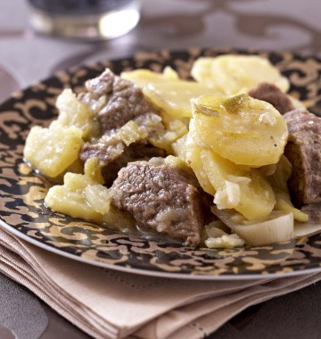

Recettes
Ingredients
Auteurs
Baeckeoffe alsacien

Resume :
Date :
Difficulté :
Ingredients :
-Pommes : 8
-Pommes : 10
Nombre de personnes : 2
Temps de Préparation :
Temps de Cuisson :
Temps de Repos :
Description :
Note :